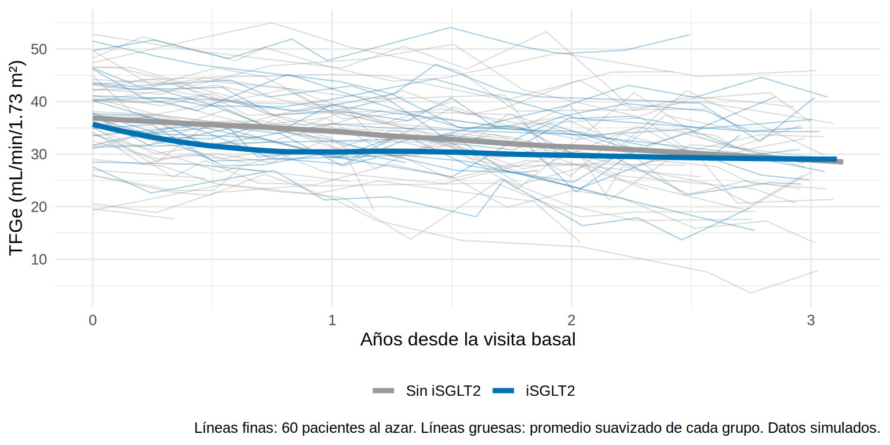
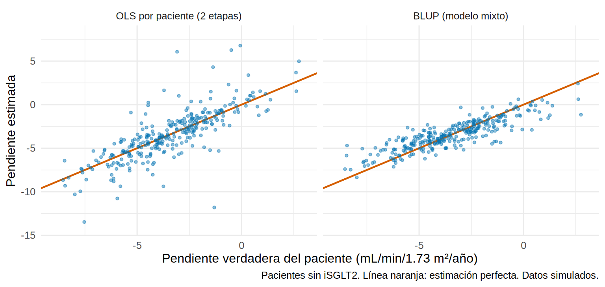
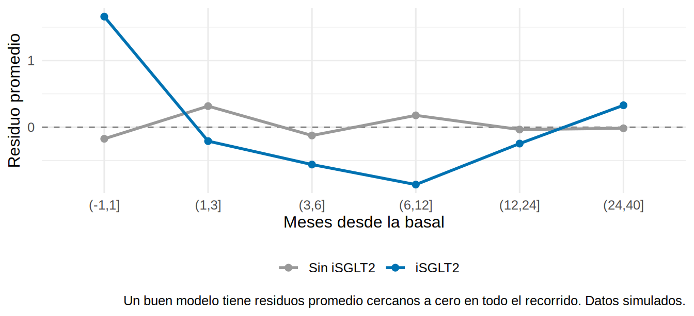
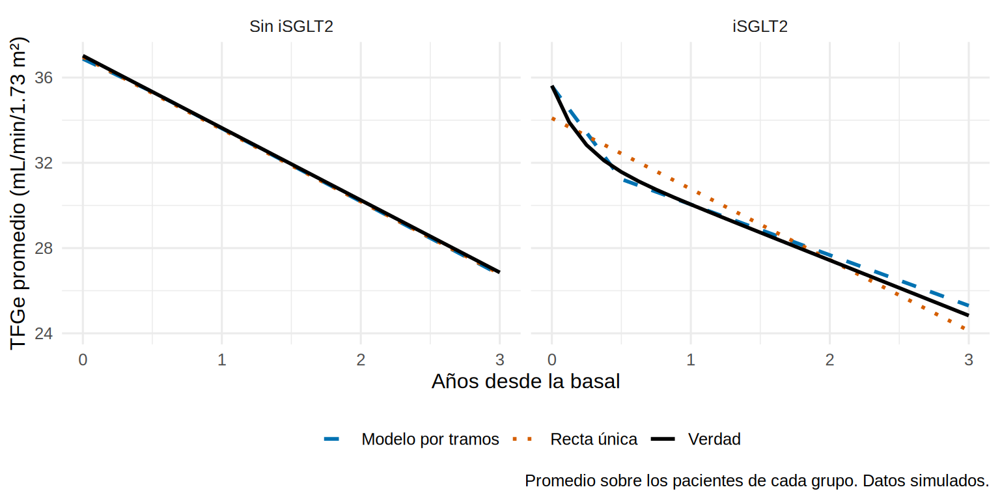

Sigues durante 3 años a 600 pacientes con ERC G3b-G4; algunos reciben un iSGLT2. Se les mide la TFGe “más o menos cada 3 meses”: unos vienen a los 2.5 meses, otros a los 4, algunos faltan a una cita, otros se trasladan a otro hospital y otros empiezan diálisis. Quieres saber cuánto cae la TFGe por año y si el iSGLT2 enlentece la caída. El análisis clásico (calcular la pendiente de cada paciente y comparar) no sirve bien con tan pocos datos por paciente. El modelo mixto sí.
Lo que vamos a hacer
Describir datos longitudinales irregulares y ver por qué el análisis en dos etapas (una pendiente por paciente) es deficiente.
Ajustar un modelo mixto con intercepto y pendiente aleatorios e interpretar sus partes.
Estimar el efecto del tratamiento sobre la pendiente, detectar una trayectoria no lineal y corregirla.
Ver qué pasa con las visitas irregulares y con el abandono.
Datos simulados (ckd_largo). Conocemos la verdad: sin tratamiento la TFGe cae ≈ 3 mL/min/1.73 m² por año; el iSGLT2 mejora esa pendiente crónica en +1.0 mL/min/año, pero causa además un descenso inicial de ≈ 3 mL/min en los primeros meses (el “dip” hemodinámico, que se atenúa con los meses).
Paso 1. Mirar los datos antes de modelar
Los datos están en formato largo: una fila por medición (Cap. 5.1), con el tiempo en meses desde la visita basal. Pasamos el tiempo a años para que las pendientes se lean “por año”:
# A tibble: 3 × 3
salida n pct
<chr> <int> <dbl>
1 Abandono 177 30
2 Fin del estudio 336 56
3 KRT 87 14
Cerca de un tercio (30 %) abandona el seguimiento y un 14 % empieza diálisis o trasplante (KRT) antes de los 36 meses. Cada paciente aporta entre 1 y 13 mediciones (mediana 9). ¿Cuán regulares son las visitas? Calculamos el tiempo entre mediciones consecutivas:
intervalos<-d|>group_by(id)|>arrange(mes)|>mutate(dt =mes-lag(mes))|>ungroup()|>filter(!is.na(dt))ggplot(intervalos, aes(dt))+geom_histogram(binwidth =0.5, fill ="#0072B2", color ="white")+geom_vline(xintercept =3, color ="#D55E00", linewidth =0.9)+labs(x ="Meses entre dos mediciones consecutivas", y ="Número de intervalos", caption ="Línea naranja: el intervalo planeado (3 meses). Datos simulados.")
Min. 1st Qu. Median Mean 3rd Qu. Max.
0.040 2.610 3.230 3.662 4.100 16.160
Qué vemos. El intervalo planeado era de 3 meses, pero el real va de casi cero (0.04) a 16 meses (mediana 3.2): las visitas son irregulares, como en la práctica real. Un método que exija “visita 1, visita 2, visita 3…” a tiempos fijos (Cap. 11.4) obligaría a forzar ventanas; los modelos con el tiempo como variable continua no lo necesitan.
Dibujamos las trayectorias de 60 pacientes al azar y la curva promedio suavizada de cada grupo con todos los datos:
set.seed(143)muestra<-sample(unique(d$id), 60)colores<-c("Sin iSGLT2"="#999999", "iSGLT2"="#0072B2")ggplot(d, aes(anios, tfge, color =trat))+geom_line(data =filter(d, id%in%muestra), aes(group =id), alpha =0.35, linewidth =0.35)+geom_smooth(aes(fill =trat), method ="loess", span =0.5, se =FALSE, linewidth =1.6)+scale_color_manual(values =colores, name =NULL)+labs(x ="Años desde la visita basal", y ="TFGe (mL/min/1.73 m²)", caption ="Líneas finas: 60 pacientes al azar. Líneas gruesas: promedio suavizado de cada grupo. Datos simulados.")+guides(fill ="none")+theme(legend.position ="bottom")

Qué vemos. Cada paciente tiene su propio nivel y su propia velocidad de caída (las líneas finas no son paralelas). Las curvas promedio caen en ambos grupos, pero la del iSGLT2 cae más al principio y luego se aplana: no es una recta. Lo retomamos en el Paso 4.
Paso 2. El enfoque clásico “en dos etapas” y sus problemas
La forma intuitiva de estimar pendientes: etapa 1, ajustar una regresión lineal a cada paciente (TFGe ~ tiempo) y quedarse con su pendiente; etapa 2, comparar las pendientes entre grupos. Solo es posible en pacientes con al menos 3 mediciones:
# A tibble: 2 × 4
tratamiento media de n
<dbl> <dbl> <dbl> <dbl>
1 0 -3.46 3.28 296
2 1 -4.03 3.74 267
Qué vemos. Hay dos problemas visibles. (1) Se pierden 37 pacientes con menos de 3 mediciones (y no son al azar: los que se fueron antes). (2) Las pendientes individuales son muy ruidosas: su desviación estándar (3.5) es mayor que la variabilidad real entre pacientes (lo comprobaremos contra la verdad en el Paso 3), porque cada una mezcla la pendiente real con el error de medición y con pocos puntos. Además, el análisis de la etapa 2 trata como igual de confiable a una pendiente calculada con 3 puntos que a una calculada con 12.
El modelo mixto resuelve ambas cosas a la vez: usa todas las mediciones, pondera a cada paciente según cuánta información aporta y estima la variabilidad real entre pacientes.
Paso 3. Intercepto y pendiente aleatorios
El modelo con intercepto y pendiente aleatorios dice que cada paciente \(i\) tiene una trayectoria lineal propia:
\(\beta_0\) y \(\beta_1\) son el nivel basal y la pendiente promedio (efectos fijos); \(b_{0i}\) y \(b_{1i}\) son cuánto se desvía este paciente (efectos aleatorios); \(\Sigma\) es la matriz de varianzas y covarianza. Comparamos primero un modelo con solo intercepto aleatorio (todos caen a la misma velocidad) con uno que también deja variar la pendiente:
m_int<-lmer(tfge~anios+(1|id), data =d)# solo el nivel varíam_pend<-lmer(tfge~anios+(1+anios|id), data =d)# nivel y pendiente varíananova(m_int, m_pend, refit =FALSE)
La prueba de razón de verosimilitud rechaza con claridad el modelo de solo intercepto (Chi² = 682, p < 0.001): las pendientes difieren entre pacientes.
Pendiente promedio: -3.40 mL/min/1.73 m² por año.
Variabilidad entre pacientes: la desviación estándar del intercepto es 8.0 mL/min y la de la pendiente 2.0 mL/min/año. Como regla, el 95 % de los pacientes tiene una pendiente dentro de ±2 DE de la media: de -7.4 a 0.6. Hay “progresadores rápidos” y pacientes casi estables.
Correlación intercepto-pendiente -0.09: casi cero aquí. Cuidado, su signo depende de dónde pongas el tiempo cero (la basal); no lo sobreinterpretes.
¿Mejor que la pendiente de cada paciente por separado?
Comparemos las pendientes individuales del enfoque en dos etapas con las del modelo mixto (el BLUP de la pendiente, ver 14.2). Para que la comparación con la verdad sea limpia usamos los pacientes sin tratamiento, cuya pendiente verdadera (b1 del oráculo) no tiene el dip:
re<-ranef(m_pend)$idblup_pend<-tibble(id =as.integer(rownames(re)), pend_mixto =fixef(m_pend)["anios"]+re[, "anios"])comp<-pend_ols|>left_join(blup_pend, by ="id")|>left_join(oraculo, by ="id")|>filter(tratamiento==0)tibble(metodo =c("OLS por paciente (2 etapas)", "BLUP (modelo mixto)"), DE_estimadas =c(sd(comp$pendiente), sd(comp$pend_mixto)), RMSE_vs_verdad =c(sqrt(mean((comp$pendiente-comp$b1)^2)), sqrt(mean((comp$pend_mixto-comp$b1)^2))))|>add_row(metodo ="Verdad (oráculo)", DE_estimadas =sd(comp$b1))|>mutate(across(where(is.numeric), \(x)round(x, 2)))
# A tibble: 3 × 3
metodo DE_estimadas RMSE_vs_verdad
<chr> <dbl> <dbl>
1 OLS por paciente (2 etapas) 3.28 2.44
2 BLUP (modelo mixto) 1.71 1.13
3 Verdad (oráculo) 2.17 NA
comp|>pivot_longer(c(pendiente, pend_mixto), names_to ="metodo", values_to ="estimada")|>mutate(metodo =factor(metodo, c("pendiente", "pend_mixto"), c("OLS por paciente (2 etapas)", "BLUP (modelo mixto)")))|>ggplot(aes(b1, estimada))+geom_abline(slope =1, intercept =0, color ="#D55E00", linewidth =0.8)+geom_point(alpha =0.45, color ="#0072B2", size =1)+facet_wrap(~metodo)+coord_cartesian(xlim =c(-9, 3), ylim =c(-14, 8))+labs(x ="Pendiente verdadera del paciente (mL/min/1.73 m²/año)", y ="Pendiente estimada", caption ="Pacientes sin iSGLT2. Línea naranja: estimación perfecta. Datos simulados.")

Qué vemos. Las pendientes por paciente (izquierda) son mucho más dispersas que la realidad (DE 3.3 frente a 2.2 real) y tienen un error cuadrático medio de 2.4 mL/min/año; las del modelo mixto (derecha) están contraídas hacia el promedio y su error es de 1.1. Es el mismo shrinkage de 14.2: pedir una pendiente “propia” a un paciente con 3 mediciones ruidosas es pedirle demasiado, y el modelo le “presta” fuerza de los demás.
Paso 4. ¿El iSGLT2 cambia la pendiente? Y la trampa de la recta
Para estimar el efecto del tratamiento sobre la pendiente añadimos la interacción tratamiento × tiempo. Ajustamos además por edad, diabetes y albuminuria, que se relacionan con el tratamiento y con la pendiente:
m_lin<-lmer(tfge~anios*trat+edad_c+dm+luacr_c+(1+anios|id), data =d)coef_lin<-summary(m_lin)$coefficientscoef_lin[c("anios", "anios:tratiSGLT2"), c("Estimate", "Std. Error", "Pr(>|t|)")]|>round(3)
El coeficiente de anios:tratiSGLT2 es la diferencia de pendiente: 0.07 mL/min/año (p = 0.75). Un análisis apresurado concluiría: “el iSGLT2 no cambia la pendiente”. Pero la verdad es +1.0. ¿Qué falló? Mira la forma de la trayectoria promedio en el Paso 1: el iSGLT2 provoca un descenso inicial y luego una caída más lenta. Una recta única “promedia” ambos tramos y el descenso inicial cancela la mejoría de la pendiente crónica.
Lo comprobamos mirando los residuos del modelo lineal por tiempo y grupo: si la recta fuera adecuada, deberían promediar cero en todas partes:
d|>mutate(residuo =resid(m_lin, type ="pearson"), visita_t =cut(mes, c(-1, 1, 3, 6, 12, 24, 40)))|>group_by(trat, visita_t)|>summarise(media =mean(residuo), .groups ="drop")|>ggplot(aes(visita_t, media, color =trat, group =trat))+geom_hline(yintercept =0, color ="grey50", linetype =2)+geom_line(linewidth =1)+geom_point(size =2)+scale_color_manual(values =colores, name =NULL)+labs(x ="Meses desde la basal", y ="Residuo promedio", caption ="Un buen modelo tiene residuos promedio cercanos a cero en todo el recorrido. Datos simulados.")+theme(legend.position ="bottom")

Qué vemos. En el grupo sin tratamiento los residuos oscilan alrededor de cero. En el grupo iSGLT2 son sistemáticamente positivos en la visita basal (la recta subestima el punto de partida), negativos entre el primer mes y el primer año (sobreestima la TFGe justo cuando ocurre el descenso inicial) y positivos al final: es la firma de una curva que la recta no capta.
Una trayectoria en dos tramos
Una solución sencilla y muy interpretable es una trayectoria lineal por tramos (piecewise): un tramo inicial de 6 meses (pmin(anios, 0.5)), donde ocurre el dip, y un tramo posterior (pmax(anios - 0.5, 0)), que representa la pendiente crónica. Cada tramo tiene su propia pendiente y su interacción con el tratamiento:
m_tr<-lmer(tfge~trat*(pmin(anios, 0.5)+pmax(anios-0.5, 0))+edad_c+dm+luacr_c+(1+anios|id), data =d)coef_tr<-summary(m_tr)$coefficientstabla_tr<-coef_tr[grep("tratiSGLT2", rownames(coef_tr)), c("Estimate", "Std. Error", "Pr(>|t|)")]|>round(3)tabla_tr
tratiSGLT2:pmin(anios, 0.5) = -5.6 mL/min/año en los primeros 6 meses: el iSGLT2 cae más rápido al inicio (≈ -2.8 mL/min extra a los 6 meses).
tratiSGLT2:pmax(anios - 0.5, 0) = 1.06 mL/min/año (EE 0.23) después de los 6 meses: es la mejoría de la pendiente crónica.
Esa mejoría estimada se parece mucho a la verdad, que podemos calcular con el oráculo (diferencia de la pendiente crónica verdadera b1 entre tratados y no tratados, ajustada por las mismas covariables):
verdad_pend<-coef(lm(b1~tratamiento+edad_c+dm+luacr_c, data =oraculo|>left_join(pac, by ="id")|>mutate(edad_c =edad-64, luacr_c =log(uacr)-5.2)))["tratamiento"]round(c(verdad_pend_cronica =unname(verdad_pend), estimada_tramos =coef_tr["tratiSGLT2:pmax(anios - 0.5, 0)", "Estimate"], estimada_recta =coef_lin["anios:tratiSGLT2", "Estimate"]), 2)
Verdad: +1.03; modelo por tramos: +1.06; recta única: 0.07. El modelo por tramos recupera el efecto y la recta no. Lo vemos en las curvas promedio: las del modelo contra la media verdadera calculada con el oráculo (promediando sobre los pacientes de cada grupo):
rejilla<-crossing(pac|>mutate(edad_c =edad-64, luacr_c =log(uacr)-5.2, trat =factor(tratamiento, 0:1, c("Sin iSGLT2", "iSGLT2"))), anios =seq(0, 3, by =0.125))rejilla$modelo_tramos<-predict(m_tr, newdata =rejilla, re.form =NA)rejilla$modelo_recta<-predict(m_lin, newdata =rejilla, re.form =NA)rejilla<-rejilla|>left_join(oraculo, by ="id")|>mutate(verdad =b0+b1*anios+dip*(1-exp(-anios/0.2)))rejilla|>group_by(trat, anios)|>summarise(Verdad =mean(verdad), `Modelo por tramos` =mean(modelo_tramos), `Recta única` =mean(modelo_recta), .groups ="drop")|>pivot_longer(c(Verdad, `Modelo por tramos`, `Recta única`), names_to ="curva", values_to ="tfge")|>ggplot(aes(anios, tfge, color =curva, linetype =curva))+geom_line(linewidth =1)+facet_wrap(~trat)+scale_color_manual(values =c(Verdad ="black", `Modelo por tramos` ="#0072B2", `Recta única` ="#D55E00"), name =NULL)+scale_linetype_manual(values =c(Verdad ="solid", `Modelo por tramos` ="dashed", `Recta única` ="dotted"), name =NULL)+labs(x ="Años desde la basal", y ="TFGe promedio (mL/min/1.73 m²)", caption ="Promedio sobre los pacientes de cada grupo. Datos simulados.")+theme(legend.position ="bottom")

Qué vemos. En el grupo sin tratamiento, las tres curvas coinciden: es una recta. En el grupo iSGLT2, el modelo por tramos sigue la verdad (caída inicial y luego pendiente más suave) y la recta única se aparta de ella al inicio y al final.
Tip💡 Otras formas de modelar una curva
Splines (splines::ns(anios, df = 3)) dan una curva suave sin elegir el punto de corte; son más flexibles pero se interpretan menos fácil (se describen mediante la curva o diferencias a tiempos concretos, p. ej. con emmeans).
Un término cuadrático (anios + I(anios^2)) sirve si la curvatura es suave; no capta bien un dip brusco.
El punto de corte (aquí 6 meses) debe fijarse por conocimiento clínico (cuándo se estabiliza el dip), no por el resultado.
Paso 5. Visitas irregulares y correlación entre mediciones
Los modelos mixtos usan el tiempo exacto de cada medición, así que las visitas irregulares no son un problema. Queda una pregunta: aparte de los efectos aleatorios, ¿las mediciones cercanas en el tiempo del mismo paciente siguen correlacionadas? Con tiempos irregulares la estructura adecuada es una autocorrelación continua (CAR1: la correlación decae con el tiempo transcurrido, sea cual sea). Con nlme:
m_nlme<-lme(tfge~trat*(pmin(anios, 0.5)+pmax(anios-0.5, 0))+edad_c+dm+luacr_c, random =~1+anios|id, correlation =corCAR1(form =~mes|id), # correlación continua según el tiempo exacto data =d, control =lmeControl(opt ="optim"))coef(m_nlme$modelStruct$corStruct, unconstrained =FALSE)# parámetro de correlación (phi)
Qué vemos. El parámetro de correlación continua es prácticamente cero (0.0006): una vez incluidos los efectos aleatorios de nivel y pendiente, no queda correlación residual, y el efecto del tratamiento tras los 6 meses es el mismo (1.06). Los efectos aleatorios ya absorbieron la correlación de cada paciente. (Con otros datos, p. ej. biomarcadores con mucha variabilidad aguda, puede ser necesario.) A diferencia del MMRM de 11.4, que trata las visitas como categorías con una covarianza completa, aquí el tiempo es continuo y el modelo es más parsimonioso.
Paso 6. Datos faltantes: el abandono
Aquí la pérdida no es menor: el 30 % de los pacientes abandona el seguimiento y el 14 % inicia KRT, y quienes se van antes tenían la TFGe más baja (en la simulación, la probabilidad de abandonar depende de la última TFGe observada: es el mecanismo MAR del Cap. 13). ¿Qué análisis lo tolera? Comparamos tres formas de estimar la TFGe media a los 36 meses en cada grupo, frente a la verdad (la media de la TFGe verdadera a los 36 meses en todos los pacientes, incluso en los que ya no tienen datos):
Solo los que tienen una medición cerca de los 36 meses (casos completos).
El modelo mixto lineal (recta).
El modelo mixto por tramos, que es el adecuado.
pp<-pac|>mutate(edad_c =edad-64, luacr_c =log(uacr)-5.2, anios =3, trat =factor(tratamiento, 0:1, c("Sin iSGLT2", "iSGLT2")))|>left_join(oraculo, by ="id")pp$pred_lin<-predict(m_lin, newdata =pp, re.form =NA)# lo que predice cada modelo a los 36 mesespp$pred_tr<-predict(m_tr, newdata =pp, re.form =NA)completos<-d|>filter(mes>=33)|>group_by(trat)|>summarise(`Casos completos (visita >= 33 m)` =mean(tfge))tab36<-pp|>group_by(trat)|>summarise(Verdad =mean(tfg_ver_36), `Mixto: recta` =mean(pred_lin), `Mixto: por tramos` =mean(pred_tr))|>left_join(completos, by ="trat")|>select(trat, Verdad, `Casos completos (visita >= 33 m)`, `Mixto: recta`, `Mixto: por tramos`)tab36|>mutate(across(where(is.numeric), \(x)round(x, 1)))
Los casos completos dan ≈ 29 en ambos grupos, demasiado alto: se quedan solo con quienes siguen en el estudio (los de mejor función), y el sesgo hace desaparecer la diferencia entre grupos (verdad: 26.9 vs. 24.8).
El modelo mixto usa la información de todos (incluidas las mediciones de quienes se fueron después) y, como el abandono depende de lo ya observado, acierta: el modelo por tramos da 26.8 y 25.3, y la recta 26.8 y 24.1; ambos cerca de la verdad (error máximo de 0.5 mL/min en el de tramos y de 0.7 en la recta), con una diferencia que ahora sí se ve entre grupos. A los 36 meses la recta falla poco (el dip ya pasó); donde más falla es en el efecto sobre la pendiente (Paso 4).
Un modelo mixto es válido bajo MAR, no bajo cualquier abandono. Si la pérdida dependiera de la TFGe futura no observada (MNAR), el sesgo persistiría; en la simulación el inicio de KRT sí depende de la TFGe verdadera actual, por eso la coincidencia es buena pero no perfecta. Esa conexión entre la trayectoria y el evento que corta el seguimiento es el tema de 14.6.
Paso 7. Revisar el modelo
Dos revisiones rápidas: los residuos no deberían depender del valor ajustado, y los efectos aleatorios (BLUP de nivel y pendiente) deberían parecerse a una normal:
Los residuos se reparten sin patrón y los BLUP se alinean con la recta del QQ-plot: no hay motivo de alarma. (En datos reales, mira también si el residuo cambia de variabilidad con el tiempo.)
Advertencia⚠️ Trampas frecuentes
Dar por buena la pendiente “lineal” sin mirar la forma. Con una trayectoria curva (un dip, un plateau, una aceleración al final), la recta da una pendiente que no describe a nadie y puede ocultar o falsear el efecto del tratamiento (Paso 4). Siempre dibuja las curvas promedio antes de modelar.
Comparar efectos fijos con REML. Para comparar modelos con distintos efectos fijos mediante anova(), hay que ajustarlos por máxima verosimilitud (anova() reajusta por defecto, refit = TRUE). Con refit = FALSE (REML) solo es válido comparar efectos aleatorios manteniendo los mismos efectos fijos, como hicimos en el Paso 3.
Interpretar la pendiente promedio como la de cada paciente. La pendiente fija es la del paciente “típico”; con una DE de pendiente de 2.0 hay pacientes casi estables y otros que caen más del doble de rápido.
Importante🎯 En resumen
Los modelos mixtos con tiempo continuo tratan bien las visitas irregulares y usan todas las mediciones de cada paciente; el modelo en dos etapas pierde pacientes y produce pendientes demasiado ruidosas (DE 3.3 frente a 2.2 real).
(1 + anios | id) permite que cada paciente tenga su nivel y su pendiente; el BLUP de la pendiente (error 1.1) es mucho más fiable que la pendiente calculada paciente por paciente (2.4).
El efecto sobre la pendiente se estima con la interacción tratamiento × tiempo; si la trayectoria no es una recta (el dip del iSGLT2), usa tramos o splines: la recta dio 0.07 y el modelo por tramos 1.06 (verdad 1.03).
El modelo mixto es válido con datos faltantes MAR (abandono según lo observado), mientras que los casos completos estiman mal la TFGe a los 36 meses.
Revisa residuos y BLUP, y dibuja siempre las trayectorias antes de modelar.
Ejercicio
Ajusta el modelo por tramos con un punto de corte a los 3 meses (pmin(anios, 0.25)) en lugar de 6. ¿Cambia la mejoría de la pendiente crónica? ¿Y su error estándar?
Reemplaza los tramos por un spline natural: ns(anios, df = 3) (paquete splines) con la interacción por tratamiento. Dibuja la curva predicha para cada grupo.
Usa solo los datos de los primeros 18 meses y calcula la pendiente promedio por tratamiento con el modelo por tramos. ¿Qué tan bien se estima la pendiente crónica con menos seguimiento?